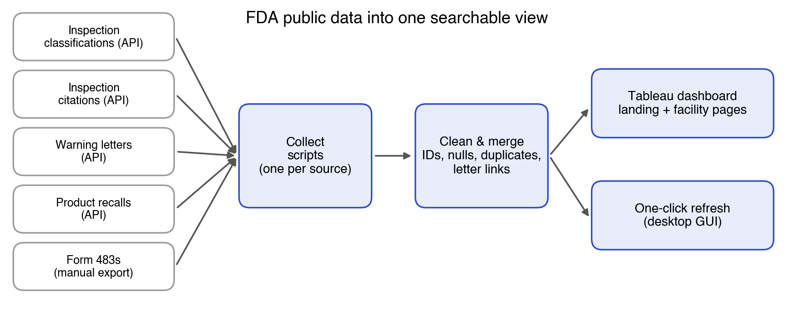
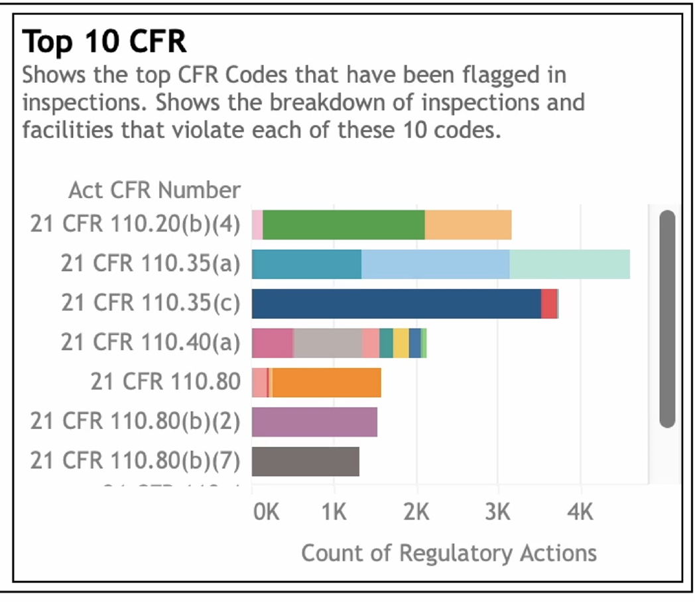
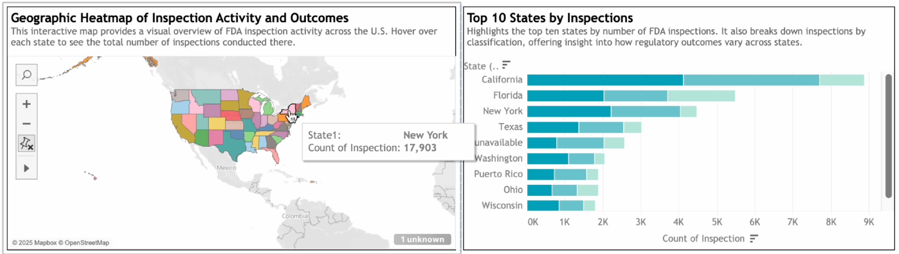
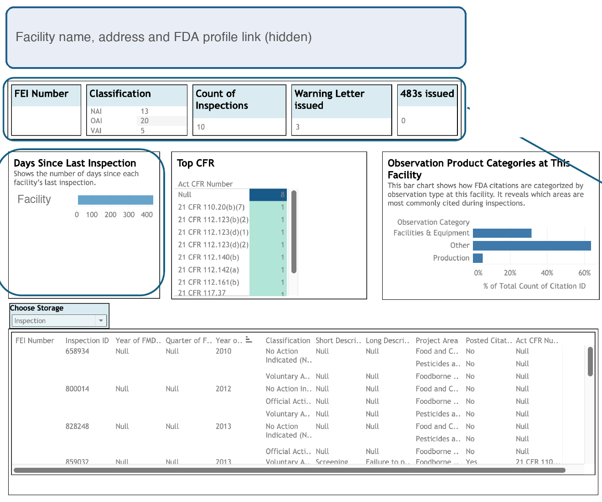
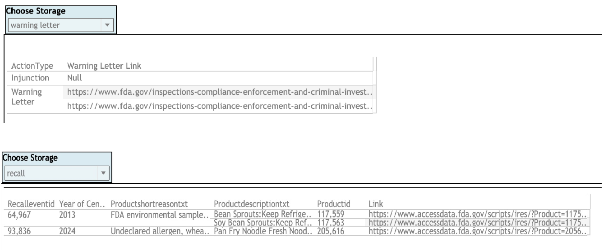
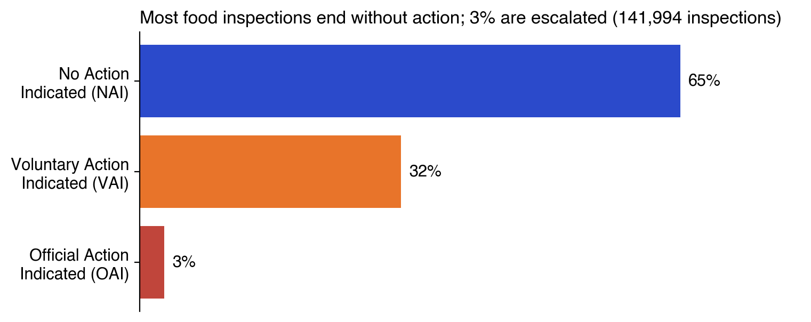
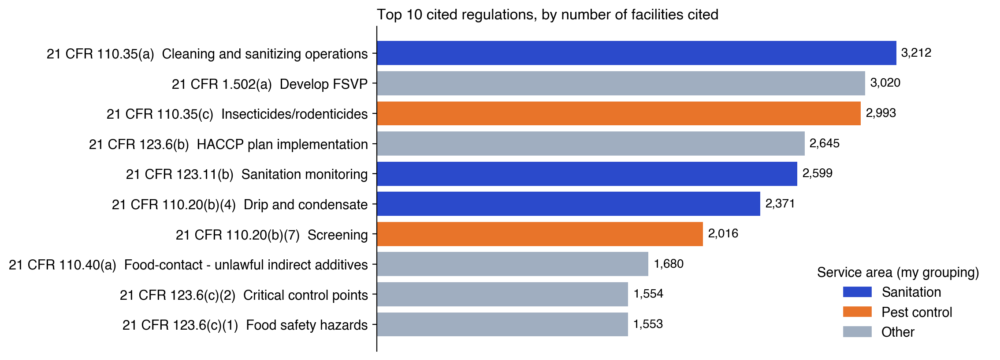
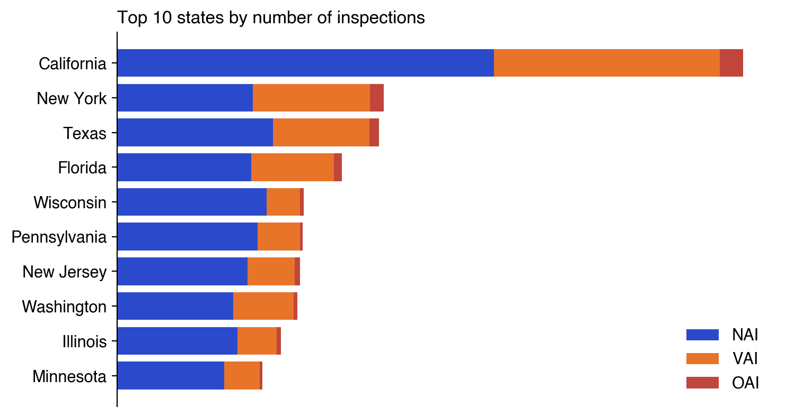

Data · Python · Tableau
FDA Compliance Data Product
A data product built for a global hygiene and food-safety services company: it pulls scattered public FDA inspection, recall and warning-letter data into one searchable dashboard, so account teams can spot facilities with food-safety problems that its services could fix.
- Python (API ingestion, pandas)
- Data cleaning & merging
- Entity matching
- Requirements & stakeholder discovery
- Tableau
- Data documentation & handoff
- Exploratory analysis
The problem
FDA inspection, recall and warning-letter data is public, but it sits on separate FDA pages with different formats and identifiers. The same company shows up under different names, records are missing fields, and related facts live in different places. Someone looking for sales opportunities had to open several FDA sites, search each one, and stitch the story together by hand.
The client wanted one place to answer: which facilities have repeated problems, what are they cited for, and where is regulatory activity concentrated, so its teams can approach them with hygiene, pest-management and training services.
Who uses it and what they ask
Weekly sessions with the client's team shaped the requirements. The main user is an account or insights person who wants to:
- see the latest inspections, Form 483s and warning letters at a glance
- find which regulations are cited most, and where
- look up one company or facility and read its full history without leaving the page
The pain points they named were the time spent moving between FDA sites, inconsistent data between sources, and no single view of recurring risk.
The data
Five sources, filtered to food-related records. Facilities are identified by the FDA's FEI number, which became the key that joins everything.
| Source | How collected | Content |
|---|---|---|
| Inspection classifications | FDA API | Outcome of each inspection: NAI, VAI or OAI |
| Inspection citations | FDA API | Cited regulation (CFR code) and description |
| Warning letters | FDA API | Enforcement actions and letter references |
| Product recalls | FDA API | Recall reason, product, status |
| Form 483s | Manual export | Inspector observations; no API exists |
After filtering to food, the cleaned data holds about 142,000 inspections across 74,000 facilities (fiscal years 2009–2025), about 37,600 recall records, 3,700 warning-letter actions, and 1,800 Form 483s.
From five sources to one table

- Collect. One script per source pulls from the FDA APIs; the Form 483 export is a manual download, so the pipeline accepts it as an upload.
- Clean. Standardize column names and types, drop columns that carry no signal (second address lines, product type where it was empty), and decide how to treat each missing field. Every decision was written down with its reason.
- Merge. Join inspection classifications to citations on FEI number and inspection ID, and where both sides had a value (city, state), keep the non-null one.
- Add links. Generate a link to the source warning letter for each warning-letter action: 3,489 of 3,669 actions carry one, so an analyst can open the original document in one click.
- Make it refreshable. A small desktop app runs collection and cleaning end to end, so someone who doesn't write Python can update the data.
What I did here. I evaluated the existing ingestion method and listed its errors and open questions before a client meeting. I ran the first data-quality pass and exploratory analysis (in Python and DataRobot), made the keep/drop and missing-value calls with written rationale, reviewed the final cleaned set for duplicates, missing values and mismatched keys, and documented the cleaning pipeline so the dashboard builders could rely on it. I also researched public sources for company parent-subsidiary data. The finding was that naming is inconsistent across sources and coverage of private and international firms is thin, so I recommended against building it into the model.
The dashboard
Built in Tableau (the client's Power BI wasn't available during the project) with written steps for rebuilding it in Power BI using DAX. It has two levels: a landing page for the whole dataset, and a facility page for one site.
Landing page. Search by company, then refine by FEI number, with a date slider. It shows the latest inspection, 483 and warning letter, inspections from the last 7 days, the split by regulatory focus area, and a searchable table of every record. Two views answer "what and where":

Hovering a bar shows the full regulation text and the number of violations behind it.

The map and the state ranking show where inspections concentrate and how outcomes (no action, voluntary action, official action) differ by state.
Facility page. Once a facility looks interesting, the user opens one page with its classification counts, number of inspections, warning letters and 483s, days since the last inspection, its most-cited regulations, and the types of observations cited. Facility name, address and ID are hidden in this screenshot.

Documents in one click. The bottom of the facility page lists the source records (inspections, warning letters, recalls, enforcement reports, 483s) with links to the original FDA documents, so nobody has to go back to the FDA sites to read them.

What the data shows
The charts below are redrawn from the cleaned data, with no firm names.
Most inspections end without action. Of about 142,000 inspections, 65% were classified NAI (no action), 32% VAI (voluntary action) and 3% OAI (official action). The OAI group is where enforcement starts, and it is small, so the repeat patterns matter more than the headline count.

The most-cited rules are the ones a hygiene and pest-management company can address. Grouping the ten most-cited regulations by the service they relate to (my grouping), five of them concern sanitation or pest control, and those five account for 56% of the citation counts in the top ten. The single most-cited rule, with about 3,200 facilities, covers cleaning and sanitizing operations; the third covers insecticides and rodenticides.

Activity is concentrated in a few states. California alone accounts for about 17,600 inspections, more than twice the next state, with New York, Texas and Florida following. New York and Florida show a higher share of VAI outcomes than most of the others. These counts are unique inspections from the final cleaned data; the dashboard screenshots above come from an earlier build that counts records, so their numbers differ.

Limitations and handoff
- Entity matching is the weak spot. The same company appears under different legal names across FDA sources. FEI number fixes most of it, but parent-company roll-ups were not solved, because public hierarchy data is incomplete.
- Scope is food only. Other FDA areas weren't included.
- Citation counts are not risk scores. A rule being cited often says what is common, not which facility is the best prospect. The dashboard surfaces candidates; judging them still takes a person.
- Form 483s are manual. The API doesn't cover them, so refreshing that table still needs a human step.
- Handoff. The project closed with a written guide to the data pipeline, a per-chart explanation of the dashboard, a user persona and journey, and the steps for moving the visuals to Power BI.
What I'd build next
- A facility-level score that combines repeat citations, recent OAI outcomes and days since last inspection, tested against which facilities the client already works with.
- A fuzzy-matching step on legal names and addresses to roll facilities up to parent companies where public data allows.
- A scheduled refresh in place of the manual run.
Skills demonstrated
| Skill | Where it shows up |
|---|---|
| Stakeholder requirements | Weekly client sessions turned into a persona, user journey and dashboard spec |
| API data ingestion (Python) | Four FDA APIs plus a manual 483 path, with one script per source |
| Data cleaning & merging | Key-based joins on FEI and inspection ID, documented keep/drop and missing-value decisions |
| Data quality assurance | Final review for duplicates, missing values and key mismatches |
| Entity resolution | Naming inconsistencies across sources; hierarchy-data feasibility check |
| Dashboard design (Tableau) | Landing and facility pages, drill-down from national to facility level |
| Business interpretation | Mapping top-cited regulations to the client's service lines |
| Documentation & handoff | Pipeline guide, dashboard guide, Power BI migration steps |
Result
A working dashboard and a refreshable data pipeline handed over to the client's team, with documentation for maintaining and migrating it.